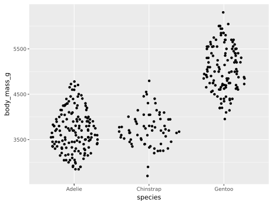

Sinaplot（シーナプロット）
Sinaplotは、箱ひげ図に代わる統計グラフの一種で、バイオリンプロットの中に個々のデータ点を（水平位置はランダムに）プロットするものです（Sidiropoulos et al, SinaPlot: An Enhanced Chart for Simple and Truthful Representation of Single Observations Over Multiple Classes, 2018）。Claus O. Wilke の Fundamentals of Data Visualization (O'Reilly, 2019) p.87 脚注によれば “The name sina plot is meant to honor Sina Hadi Sohi, a student at the University of Copenhagen, Denmark, who wrote the first version of the code that researchers at the university used to make such plots (Frederik O. Bagger, personal communication).” とのことで、論文第2著者の Sina（シーナ）さんに因むようです。
上はパーマーペンギンの体重分布のSinaplotです（バイオリンプロットを薄く重ね書きしています）。
オリジナルの著者たちによる sinaplot パッケージがR用に作られています。Rのggplot2でもsinaplotが描けます。
後で例を挙げますが、Python用にはRのggplot2を模した plotnine パッケージでsinaplotが描けます。Seabornを拡張した seaborn_sinaplot パッケージもありましたが、最新のSeabornでは使えなくなっています（Seaborn 0.12.2までなら動きますが、新しめのNumPyで使うには2箇所の np.bool を bool に書き換える必要があります）。
このページの図は、独自実装の次のモジュール sinaplot.py を使って描きました（ChatGPT-4oに手伝ってもらいました）：
import numpy as np
import matplotlib.pyplot as plt
from scipy.stats import gaussian_kde
def sinaplot(x, y, data, violin=True, max_width=0.8, title=None,
show_grid=False, ax=None, random_seed=None):
"""
Draws a sinaplot: a jittered dot plot with optional violin shape background.
Parameters:
- x: str. Categorical column name in data.
- y: str. Numerical column name in data.
- data: pandas.DataFrame. Input data.
- violin: bool. Whether to draw violin background. Default True.
- max_width: float. Maximum horizontal jitter width. Default 0.8.
- title: str or None. Plot title.
- show_grid: bool. Whether to show grid.
- ax: matplotlib.axes.Axes or None. Axes to plot into. If None, uses current Axes.
- random_seed: int or None. Seed for reproducibility of jitter.
Returns:
- ax: The matplotlib Axes used.
"""
if random_seed is not None:
np.random.seed(random_seed)
fig = plt.gcf()
if ax is None:
ax = plt.gca()
data = data.dropna(subset=[x, y])
categories = np.sort(data[x].unique())
default_color = plt.rcParams['axes.prop_cycle'].by_key()['color'][0]
def offset(category_index, data, scale=1.0):
return np.array([category_index] * len(data)) + (scale * data)
density_max = 0
for category in categories:
values = data[data[x] == category][y].values
n = len(values)
if n >= 2:
kde = gaussian_kde(values)
density_max = max(density_max, n * kde(values).max())
for i, category in enumerate(categories):
values = data[data[x] == category][y].values
n = len(values)
if n < 2:
ax.scatter([i] * n, values, color=default_color, s=10, zorder=3)
continue
kde = gaussian_kde(values)
if violin:
value_range = np.linspace(values.min(), values.max(), 50)
density = kde(value_range)
density = n * density / density_max * max_width / 2
ax.fill_betweenx(value_range, offset(i, density), offset(i, -density),
color=default_color, alpha=0.3, zorder=1)
jitter = n * (np.random.random(n) * 2 - 1) * kde(values) / density_max * max_width / 2
ax.scatter(offset(i, jitter), values, color=default_color, s=10, zorder=3)
ax.set_xticks(range(len(categories)))
ax.set_xticklabels(categories)
ax.set_xlim(-0.8, len(categories) - 0.2)
ax.set_xlabel(x)
ax.set_ylabel(y)
if title:
ax.set_title(title)
ax.grid(show_grid)
return ax # just in case
上のコードを sinaplot.py というファイル名で保存し、カレントディレクトリに置いておきます。これを使ってパーマーペンギンのSinaplotを描きます：
import seaborn as sns
from sinaplot import sinaplot
penguins = sns.load_dataset("penguins")
sinaplot(x="species", y="body_mass_g", data=penguins)
ラベル類を日本語にするには次のようにします：
ax = sinaplot(x="species", y="body_mass_g", data=penguins)
ax.set_xlabel("")
ax.set_ylabel("体重 (g)")
ax.set_xticks([0, 1, 2], ["アデリー\nペンギン", "ヒゲ\nペンギン", "ジェンツー\nペンギン"])
薄いバイオリンが邪魔なら violin=False オプションを付けます。
実験用にランダムデータを生成して描きます：
import numpy as np
import pandas as pd
from sinaplot import sinaplot
rng = np.random.default_rng()
d = {
"name": ["Aaa"] * 50 + ["Bbb"] * 20 + ["Ccc"] * 30,
"value": np.concatenate((rng.normal(10, 3, 50),
rng.normal(5, 1, 20),
rng.normal(7, 5, 30)))
}
df = pd.DataFrame(data=d)
sinaplot(x="name", y="value", data=df, violin=False, title="Sinaplot Example")
上にも書きましたが、Rのggplot2を模した plotnine パッケージの geom_sina を使ってもsinaplotが描けます。
import seaborn as sns
from plotnine import ggplot, aes, geom_sina
penguins = sns.load_dataset("penguins")
p = (ggplot(penguins, aes(x='species', y='body_mass_g'))
+ geom_sina())
p.show()

この実装では、ご覧のように、群ごとの点の密度が一定ではないようです。
Bokehを使った例もありましたのでご参考まで。